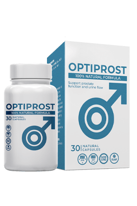

Pablo Motos: Los seguidores del famoso presentador español
Iñaki Gabilondo están
preocupados por su súbita desaparición de los medios de comunicación. Estos
cambios tan
inesperados, con escasa información de la fuente, están generando muchos
rumores. ¡En una
entrevista que concedió al programa «El Hormiguero», Iñaki cuenta por
primera vez la verdad sobre
su enfermedad!
Anteriormente, Iñaki aparecía sistemáticamente en el programa con jovialidad
y alegría. Sin
embargo, en la reciente
edición de "Late Motiv En Casa", los espectadores vieron a un presentador
significativamente
cambiado.
Fueron los espectadores de 'Late Motiv En Casa' y los seguidores del
presentador los primeros en
dar la voz de alarma.
La cadena empezó a publicar que Gabilondo tenía algún problema familiar. Más
tarde, se publicaron
en Internet mensajes
más pesimistas, según los cuales Iñaki padecía una grave enfermedad cerebral
y estaba en
tratamiento.
Pablo Motos: Poco más tarde, en plena emisión, el presentador confesó que tenía una enfermedad grave pero no mortal. Eso fue todo. Hasta hoy, el presentador guardaba silencio y no hacía ningún comentario sobre la escandalosa información, ni sobre su enfermedad, ni sobre su curación milagrosa. Ahora, sin embargo, Iñaki ha decidido decir la verdad y desmentir los rumores.
Iñaki Gabilondo habla de la realidad.
Pablo Motos: Iñaki, He vuelto a ver nuestra entrevista anterior de hace dos años, al final de la cual hice la pregunta: "¿Y ahora qué? ¿Abandonarás finalmente el canal? ¿Eres un pájaro de mal agüero?
Iñaki Gabilondo: (sonriendo) Resulta que es así. Recuerdo que entonces respondí que cuando te confías a Dios, no tienes miedo de nada. Pero, hace un par de años, no podía imaginar por lo que iba a pasar. Creo que Dios me envió esta prueba por una razón. Me he hecho más fuerte. Ahora puedo ayudar a muchas personas que están pasando por lo mismo que yo pasé.
Pablo Motos: ¿Qué te ha ocurrido verdaderamente? Es una pregunta que probablemente preocupa a todo el país en estos momentos.
Iñaki Gabilondo: Para serte sincero, al principio me daba vergüenza hablar de mi enfermedad, que es un problema muy, cómo decirlo, delicado para todo hombre. Lo que ocurrió fue que tuve prostatitis. Y estaba en una fase aguda. Así de simple. Y todo ocurrió en un instante, en mi trabajo, simplemente me «torcí» del dolor.
Iñaki Gabilondo: El diagnóstico fue prostatitis en fase aguda, y estaba a punto de sufrir un adenoma. Me quedé atónito, aterrorizado. Empecé a pensar en lo mucho que iba a cambiar mi vida, en los asuntos pendientes. Y ahora, ¿quién me necesita con este diagnóstico?
Pablo Motos: Tú mismo dices que la prostatitis no es una enfermedad mortal. Y al conocerte, me atrevería a decir que eres optimista. ¿Por qué esos pensamientos tan sombríos? Es como si te despidieras de la vida.
Iñaki Gabilondo: Así fue. Me despedía de la vida cotidiana y activa. De la vida a la que estaba acostumbrado. Sabía que ahora las cosas serían diferentes. Todo mi horario, mis hábitos y mi vida en general tendrían que supeditarse a ir al doctor, posiblemente a operarme. Incluso empecé a perder la fe durante ese periodo, cosa que aún no me perdono.
Pablo Motos: Iñaki, has estado callado todo este tiempo. Y, sin embargo, mucha gente que te quiere y te respeta, tus espectadores, estaban preocupados por ti. ¿Por qué?
Iñaki Gabilondo: No lo sé. No podía hablar de ello. No quería que se compadecieran de mí ni que me trataran de forma diferente. Intenté pensar sobre ello por mi cuenta, asimilarlo, sobrellevarlo.
Pablo Motos: ¿Qué ocurrió después?
Iñaki Gabilondo: Después me hicieron un examen, más tarde un
tratamiento, no te
aburriré con los detalles, un tratamiento que no dio ningún resultado. Me
remitieron a una
operación, a la que no accedí. Ya había empezado a desesperarme. Dejé de
hacer deporte. Dejé
muchas cosas... También recuerdo haber leído una entrevista a un famoso
urólogo de Israel.
Ahora no puedo recordar su nombre, de la clínica Assuta en Tel Aviv. Hablaba
de lo cansado que
estaba de corregir los
errores de nuestros doctores, de que nuestra medicina estaba atrasada y de
que, en general, la
gente no tenía ninguna
posibilidad de gozar de buena salud, porque nuestros doctores solo
extorsionan a los pacientes,
mientras que a ellos no
les importan los resultados. Me molestó mucho. Era como una doble sensación.
Por un lado, en virtud de mi profesión, he conocido a muchos de nuestros
doctores, con talento y
dedicación, que están
dispuestos a trabajar gratis por el bien de sus pacientes para lograr su
recuperación. Por otra,
una de las mejores
clínicas de Israel, y el doctor que concedió esa entrevista es un experto en
la materia reconocido
internacionalmente.
Iñaki Gabilondo: Evidentemente, en mi caso estaba descartado cualquier tratamiento en el extranjero. Soy patriota, me resulta difícil abandonar mi país de origen durante mucho tiempo. Creo en nuestra medicina. Esta creencia mía casi me convierte en discapacitado, y estaba convencido de la veracidad del médico israelí.
Pablo Motos: Ahora no crees en la medicina española, ¿verdad?
Iñaki Gabilondo: Sí y no. Durante ese tiempo vi a muchos
doctores. En aquella época
aún no había dejado la televisión, pero mi sueldo ya no era suficiente. La
mejoría llegaba,
durante la consulta. Pero en cuanto terminaba el tratamiento, la prostatitis
volvía a empeorar.
Así me curaron.
Ya me he acostumbrado a la idea de que al final tendré un adenoma, seguido
quizá de un cáncer. Y
eso es para toda la vida. Pero, como comprenderás, soy periodista. A mí me
han enseñado a
comprender a fondo un problema y luego a sacar conclusiones. Así que,
después de rezar, empecé a
investigar el problema.
A mí me trataron con el mismo método que a todos los hombres con prostatitis
en nuestro país:
antibióticos y cirugía, sin otras opciones. ¡Este es un enfoque
fundamentalmente erróneo! Pero,
por desgracia, en España tenemos nuestra propia verdad, nuestra propia
burocracia y nuestra propia
mafia farmacéutica. Mi problema con la próstata se agravaba. Me cansaba
mucho. Casi me despiden
del trabajo porque estaba literalmente atado al váter.
En ese momento pedí una excedencia y me ocupé concretamente de mi problema.
Para entonces ya me
había dado cuenta de que, sin mí, me sanaría, por así decirlo. En última
instancia, lo que
necesitaba no era cirugía para vencer la prostatitis, sino restablecer el
flujo sanguíneo normal a
la próstata. Por alguna razón, yo era el único que lo entendía, pero no mis
doctores.
Más tarde acudí a la consulta de César Carballo, un doctor muy conocido. Le
conté mis reflexiones.
¡Y confirmó mis
temores! Efectivamente, la única opción para vencer la prostatitis es
normalizar el suministro de
nutrientes a la
próstata.
Pablo Motos: ¡Tu vocabulario ha mejorado mucho!
Iñaki Gabilondo: No podéis prescindir de ello. Pero, los
hombres con prostatitis lo
entenderán, espero que no lo necesites. Pero todos somos humanos y nadie es
inmune a este
problema. Así que César Carballo me explicó que los problemas de próstata
son un diagnóstico muy
rentable para las empresas farmacéuticas, y para los doctores a los que
estas empresas "sobornan".
Sí, el resultado de mi investigación periodística ha sido decepcionante:
simplemente nos están
estafando por dinero. En España, concretamente en la Universidad Complutense
de Madrid, se ha
desarrollado y probado clínicamente durante 10 años un método para tratar
con éxito la prostatitis
y el adenoma. También existe un tratamiento que elimina la prostatitis en
más del 60% de los casos
y conduce a la remisión a largo plazo en el resto, ¡¡¡pero se ha ocultado
cuidadosamente por las
razones antes mencionadas!!!
El milagro que me ha salvado... O mejor dicho, el milagro que Dios ha
respondido a mis plegarias
ha sido Optiprost.
César Carballo me tranquilizó de inmediato diciéndome que Optiprost es un
compuesto totalmente
natural, sin efectos
secundarios e inofensivo para el organismo. Pero es muy eficaz, porque
contiene alfa-ciferol en
una forma especial,
fácil de absorber. Además de este ingrediente y de la vitamina D, Optiprost
contiene unos 40
micronutrientes y
macronutrientes más, sustancias activas y vitaminas.

Pablo Motos: ¡Es una noticia sensacional! ¡Es tu sagrado deber periodístico y humano contárselo al mundo!
Iñaki Gabilondo: ¿Quién me lo va a permitir? Mi única esperanza es tu show independiente.
Pablo Motos: Por supuesto, nuestras emisiones no tienen censura, es el principio fundamental de nuestro trabajo. Cuéntanoslo todo. ¿Cómo funciona el remedio? ¿Cuál es la metodología? Y, lo más importante, ¿dónde y cuánto cuesta?
Iñaki Gabilondo: ¿Cómo funciona? (sonríe). ¡Optiprost hace lo
único correcto y
necesario: normaliza el suministro de nutrientes a la próstata! ¡La
prostatitis desaparece
literalmente con un solo tratamiento!
¡Importante! Los estudios han demostrado que mayo y junio son los mejores
momentos para iniciar el
tratamiento. Al
estabilizarse la temperatura media, se aceleran los procesos metabólicos del
organismo y se
intensifica el efecto del
tratamiento. La recuperación es un 37% más rápida que en otras épocas del
año.
Pablo Motos: ¿Tengo entendido que tomaste Optiprost durante el curso?
Iñaki Gabilondo: ¡Claro que sí! Por aquel entonces, Camilo
Sesto acababa de sufrir un
accidente desafortunado. Me di cuenta de que incluso personas famosas en sus
círculos eran
tratadas con métodos anticuados e ineficaces. Lo sentí por él, pero no iba a
repetir su destino y
confié en Dios y en el remedio Optiprost.
Probablemente fue la mejor
decisión de mi vida.
Todos los conocimientos que he adquirido a lo largo del tiempo sobre la
prostatitis, todas las
preguntas y problemas que
he tenido, Optiprost los ha resuelto. Lo ha resuelto
rápidamente, en sólo un
par de meses.
Ahora me siento muy bien.
He recuperado totalmente la próstata y, con la ayuda de Dios, he vuelto a mi
vida plena y a mi
trabajo favorito.
Pablo Motos: ¿Por qué todo el mundo debe conocer Optiprost?
Iñaki Gabilondo: Porque Optiprost es un medicamento único. Se recomienda a todos los hombres a partir de los 40 años. Pasados los 40, la salud de la próstata empieza a deteriorarse rápidamente: los vasos sanguíneos que la alimentan se obstruyen con depósitos y es necesario limpiarlos para evitar la aparición de adenomas y prostatitis.
Pablo Motos: Muchas gracias, lo tendré en cuenta. Entonces, resumamos. Mi pregunta tradicional: ¿qué es lo siguiente?
Iñaki Gabilondo: Lo próximo... lo próximo es continuar con mi trabajo, y ahora también estoy participando activamente en el rodaje de un programa como presentador y productor, que saldrá en La Sexta en otoño. Y estoy, ya sabes, agradecido al destino y a Dios Nuestro Señor por esta enfermedad y por mi milagrosa recuperación. Todo tiene un motivo. Así que tenía que ser. Ahora ayudaré a los hombres que padecen prostatitis. Hombres que se preocupan por su salud y quieren evitar esta enfermedad.
Pablo Motos: ¡Casi se me olvida! ¿Cómo puede la gente conseguir Optiprost? ¿Dónde? ¿Por qué no se envía a los hospitales?
Iñaki Gabilondo: Como ya he mencionado, por el momento, el remedio sólo está disponible en España. Se distribuye bajo el estricto control de la Universidad Complutense de Madrid. Cada envío del producto es controlado por la mencionada universidad. Para conseguir Optiprost, todo lo que tienes que hacer es dejar una solicitud en línea con tu nombre y número de teléfono. El formulario se colocará directamente en su sitio web para que cualquier persona de España que lea este artículo y que padezca prostatitis, como yo, pueda enviar instantáneamente una solicitud y recibir Optiprost
Pablo Motos: He entendido bien: ¿cualquiera puede obtener el remedio y librarse de la prostatitis?
Iñaki Gabilondo: Sí, todo ciudadano español puede dejar una solicitud de Optiprost. Además, el producto se distribuye ahora a un precio especial en España porque todo el mundo comprende lo peligrosa que es la prostatitis y que no puedes librarte de ella con los remedios clásicos.
Condiciones para participar en la promoción:
- Vivir en España
- El descuento solamente se aplica a los residentes en España
- Sólo para uso personal
Esto es para hacer frente a los revendedores que intentan comprar Optiprost en grandes cantidades y revenderlo con su propio margen de beneficio. - Podrás adquirir el producto con un -50% de descuento hasta el
El será el último día en que estará disponible el precio especial de Optiprost, ya que las cantidades son estrictamente limitadas
Hay un «pero»: este precio se consigue mediante subvenciones del presupuesto y las finanzas del Ministerio de Sanidad. Cada uno. Hasta ahora, la financiación es suficiente para un lote de 30.000 envases del producto.
Pablo Motos: ¿Estás diciendo que el será el último día para solicitar el remedio con precio preferencial? ¿Significa eso que la gente aún puede conseguir el remedio?
Iñaki Gabilondo: No te puedo decir la cantidad de productos que quedan a la venta a un precio especial. Los doctores me dijeron que la demanda está creciendo exponencialmente. A decir verdad, yo también he cogido un paquete para mí. El programa debería durar hasta el o hasta el final de la cuota. Después, habrá que esperar más financiación. Te recomiendo que, mientras Optiprost esté disponible, lo pidas con descuento, hagas el curso y te olvides de la prostatitis de una vez por todas.
Para nuestros lectores, especialmente, publicamos el formulario de pedido oficial
PROMOCIÓN
SOLO 2 DIAS
e
Orden Optiprost!
Por Solo 34900 $ en su lugar
69800
$
Quiero pedir Optiprost

DEBATE:
Durante 7 años acudí a nuestros médicos. Me recetaron un montón de cosas. Me puse inyecciones y me tragué un montón de pastillas. No sirvió de nada. Ahora entiendo por qué. Por cierto, compré Optiprost en cuanto empezó una promoción en nuestra ciudad. Llevo usándolo solamente la segunda semana, pero puedo decir que hay cierta mejoría. Espero que después del curso todo sea como debe ser y que mi impotencia desaparezca por completo.
Después de leer el artículo, decidí inmediatamente hacer un pedido a través del formulario del sitio web para probar el producto. El caso es que la medicación habitual no me ayudó durante mucho tiempo: la impotencia relacionada con la edad, me dijeron, es difícil de curar. Ahora te informo de los resultados. El remedio llegó muy rápidamente. Ya desde el primer día me siento tan aliviado que no he podido evitar escribir aquí sobre ello. Ir al váter ya no es ningún problema. ¡Muchísimas gracias, al menos ahora puedo llevar una vida normal!
Tras leer las primeras opiniones, decidí hacer un pedido también para mi esposo, dejé un pedido directamente en este sitio web. Cuando lo reciba os lo haré saber

lo he pedido, debería llegarme en tres días. Estoy deseando que llegue.
Nuestro amigo de una farmacia privada de Alemania tiene este Optiprost por 225 euros, así que no me atreví a comprarlo, me daba lástima pagar tanto dinero. ¡Resulta que aquí se puede comprar más barato! Lo pedí enseguida porque no sabía cuándo tendría la oportunidad.
Hiciste bien en pedirlo a través del formulario oficial. Los productos falsificados sólo los puedes conseguir en otros sitios.
Es mejor no acudir a los médicos de clínicas y hospitales. Nunca ha servido de nada lo que recetan. El problema sigue ahí. He pedido Optiprost y ya veremos qué pasa.
¡Es un milagro! ¡Llevo tres semanas utilizando Optiprost, lo peor ha desaparecido y mi potencia es tan buena como cuando era joven! ¡Que el éxito perdure en tu proyecto!
Siempre he sido paciente y pensaba que no había forma de librarme de una erección débil. Ahora estoy pensando en pedir este producto y espero que me ayude.
El caos en los hospitales es enorme. No hay palabras para describirlo. ¡Menos mal que existe Internet, donde puedes leer la verdad sobre todas las innovaciones y avances de la medicina! Hice una solicitud rellenando un formulario, me llamaron en 30 minutos, me lo contaron todo y prometieron entregarme el producto en 3 días. ¡En 21 días me olvidaré para siempre de la prostatitis, ojalá la hubiera conocido antes! ¡Quiero volver a sentirme como un hombre!

Qué horror. Ya sospechaba que los hospitales no eran transparentes con las recetas. Pero no esperaba esto.
Tenía una erección muy débil. Tenía y se fue... ¡En 1 curso desapareció por completo! No voy a más clínicas después de este artículo. ¡Nunca más!
Me gustaría intentar deshacerme de mi potencia débil rápidamente y, lo que es más importante, de una forma fácil e indolora. Creo que esta es una opción para mí. Muchas gracias por la información, hoy mismo enviaré mi pedido, espero que aún no se haya acabado todo.
Mi esposo padecía de impotencia total, fuimos juntos a los médicos. Le quiero, daría mi vida por él, pero no había forma de aliviar su sufrimiento. Mi amiga me habló de Optiprost y me dio el enlace al sitio web oficial. Curamos la prostatitis de mi marido y aumentamos tanto su potencia que hasta me da miedo, ya estoy acostumbrada a tanta presión))
Gracias por este interesante artículo. Todo en España es corrupto al más alto nivel, menos mal que aún existe internet. He pedido Optiprost. Lo utilizaré.
¡Lo confirmo totalmente! Optiprost es una
cura milagrosa. Lo compré
en Montenegro cuando
fui de vacaciones el verano pasado. Padecía prostatitis crónica
desde hacía unos 10 años.
Intenté tratarla, pero como ya he dicho, el tratamiento sólo
tuvo un efecto temporal. En
cuanto empecé a utilizar Optiprost, me
libré completamente de la
prostatitis. No la he
tenido durante más de seis meses y nunca ha vuelto a aparecer.
Nunca había utilizado
Optiprost, pero soñaba con él. Se lo
recomiendo a todos los hombres.
¡Les ayudará! Guardo
el último envase en mi botiquín, por si acaso...
¡Pedí Optiprost! ¡Me sorprendió gratamente la calidad del servicio y la capacidad del personal, no como en nuestros hospitales! ¡Gracias!
Yo también tengo experiencia en deshacerme de la prostatitis con este remedio. Me ha ayudado a librarme de la prostatitis sin necesidad de masajes.
Yo padezco prostatitis crónica desde los 28 años. Ahora tengo 41 años. Lo traté dos veces durante ese tiempo, cuando hubo exacerbaciones graves. La última vez, los médicos apenas la salvaron. La última vez los médicos me salvaron por los pelos. Dijeron que podría haber sobrevivido un poco más y que el cáncer de próstata habría crecido. Por eso aconsejo a todos los que tienen prostatitis que se deshagan de ella lo antes posible. Es una enfermedad muy peligrosa.
¡Optiprost es el mejor remedio de todos! Estoy de acuerdo con el autor del artículo y con todos los comentaristas que lo han elogiado. Lo utilicé hace unos 3 meses. ¡La prostatitis ha desaparecido por completo! La tuve unos años antes, me endurecía la polla y solía correrme rápidamente. ¡Ahora todo ha vuelto a la normalidad! ¡Pedí este producto por mucho dinero en el sitio web oficial, y ahora están financiando este programa para salvar a más gente!
He leído más sobre Optiprost. ¡Impresionante! Lo pedí. Me prometieron que podría recibirlo en la oficina de correos en 1-2 días. Muy cómodo.
¡Chicos, esto es realmente increíble! Lo compré hace un par de meses. Lo apliqué como todo el mundo en el sitio web oficial. Ahora no tengo ningún síntoma de prostatitis. Ya no tengo dolor, ni corro al baño, ni molestias urinarias. También he mejorado la potencia y la duración de las relaciones sexuales. Me siento muy bien. Sin duda merece la pena comprarlo con descuento. La eficacia del producto me ha sorprendido gratamente. Ya se lo he aconsejado a todas mis amigas, que alguna vez se han quejado de problemas en la cama!) Pídelo sin pensarlo, antes de que se acabe la promoción
Gracias por este interesante artículo. Si no fuera por el artículo, nunca habría sabido que existía Optiprost, y lo pedí en el sitio web oficial cuando estaba desesperado. Lo tomé, me tomé el primer medio curso de 2 semanas, me hice análisis y me quedé ALUCINADO. Antes de tomarlo, mi testosterona no llegaba ni a la marca de 2 y ahora mi testosterona está al nivel de 22 años, aunque ya tengo mucho más de 40! ¡Ahora recomiendo Optiprost a todos mis amigos! Éstos son mis resultados: